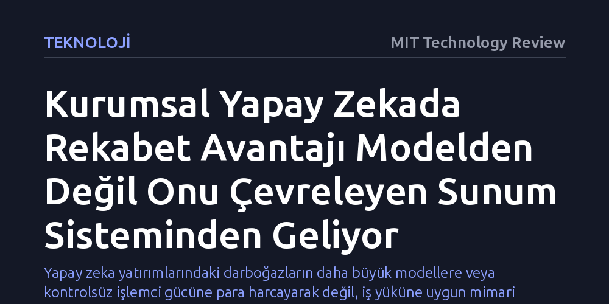

TEKNOLOJI · MIT Technology Review · 2026-10-23
Kurumsal yapay zekada verim ve maliyet avantajı, en gelişmiş modeli seçmekten değil; bellek, kuyruk ve donanım kısıtlarını yöneten sunum mimarisinden kaynaklanıyor. Şirketler için asıl sürdürülebilir değer, değişen modellere hızla uyum sağlayan esnek bir mühendislik altyapısı kurmaktır.
Yapay zeka yatırımlarındaki darboğazların daha büyük modellere veya kontrolsüz işlemci gücüne para harcayarak değil, iş yüküne uygun mimari optimizasyonlarla aşılabileceğini gösterir.

Kurumsal yapay zeka projelerinde karar vericiler çoğunlukla en yüksek kıyaslama puanlarına sahip temel modelleri seçmeye odaklanıyor. Ancak kavram kanıtlama (PoC) aşamasından canlı üretim ortamına geçildiğinde, başarının asıl belirleyicisinin seçilen modelin kendisinden ziyade onu çevreleyen mühendislik sistemi—yani sunum iskeleti (serving harness)—olduğu görülüyor. Yalnızca birkaç kullanıcının katıldığı testlerde modelin doğruluğu yeterli görünse de, binlerce kullanıcının eşzamanlı bağlandığı gerçek dünya senaryolarında gecikme süresi, altyapı maliyeti ve GPU kullanım verimliliği gibi sert kısıtlar projenin kaderini belirliyor.
Her kurumsal iş yükünün doğası ve operasyonel sınırları birbirinden köklü biçimde ayrışır. Örneğin, kullanıcıya anlık cevap dönmesi gereken müşteri odaklı bir asistan ile gece boyunca arka planda çalışabilecek bir evrak işleme hattının mimari beklentileri taban tabana zıttır. Aynı temel modeli kullansalar dahi, yüksek hacimli bir müşteri destek platformu ile kurum içi bilgi tabanı arama aracı bütünüyle farklı sunum mimarilerine ihtiyaç duyar. Dolayısıyla doğru mühendislik yaklaşımı, modeli merkeze alıp sistemi ona uydurmak yerine, iş yükünün kısıtlarını tespit edip mimariyi bu sınırlara göre inşa etmektir.
Üretim ortamına ulaşıldığında, ilk bakışta birbirinden bağımsız sanılan teknik kararlar birbirini zincirleme biçimde etkilemeye başlar. Sunum mimarisi doğrudan bellek kullanımını, bellek yönetimi eşzamanlı istek kapasitesini, eşzamanlılık ise paketleme (batching) ve kuyruk çizelgelemesini biçimlendirir; bu çizelgeleme ise doğrudan GPU kullanımını ve gecikme süresini belirler. Bu hassas denge doğru kurulmadan kuantizasyon, spekülatif kod çözme veya dikkat mekanizması optimizasyonları gibi popüler teknikler tek başlarına vadettikleri ekonomik verimi sağlayamaz.
GPU bellek yönetimi bu bağımlılığın en çarpıcı tablosunu sunar. Çıkarım sırasında model ağırlıkları GPU belleğinde sabit kalırken, aktif kullanıcı istekleri ve bağlam uzunluğu arttıkça anahtar-değer (KV) önbelleği hızla büyür. Eşzamanlı istek sayısı arttığında, sistemde henüz kullanılabilir işlemci kapasitesi bulunmasına rağmen GPU belleği aniden tükenebilir. Asıl darboğazın bellek şişmesi olduğunu anlamadan ortama daha fazla işlem gücü eklemek, mevcut verimsiz sistemi çözmediği gibi maliyetleri de katlayarak artıran pahalı bir hataya dönüşür.
Yapay zeka liderleri için temel kural, optimizasyon yöntemlerine bir koleksiyon gibi yaklaşmamaktır. Yazıda vurgulandığı üzere, "Optimizasyon tekniklerini Pokémon kartı gibi düşünmeyin; amaç hepsini toplamak değil." Asıl amaç, uygulamanın iş gereksinimlerini ve yanıt standartlarını bozmadan en yüksek etkiye sahip darboğazı ortadan kaldıracak tekniği hassasiyetle devreye almaktır. Bu da liderlerin önce mevcut kısıtı titizlikle ölçmesini, sorunu gidermesini, sonucu yeniden ölçmesini ve ardından belirebilecek bir sonraki darboğaza odaklanmasını gerektirir.
Yanıt kalitesinde marjinal bir iyileşme sunan ancak çıkarım maliyetini iki katına çıkaran ya da gecikme süresi hedeflerini karşılayamayan bir model, kurumsal üretim için doğru tercih değildir. Her iş yükünün en lüks donanıma ve en pahalı modele ihtiyacı yoktur. Akılcı mühendislik yatırımı, ihtiyaç duyulmayan kapasitelere aşırı ödeme yapmaktan kaçınarak, iş biriminin talep ettiği performansı tam kararında ve en sürdürülebilir maliyetle sağlayabilmektir.
Sunum iskeletine yatırım yapmanın en stratejik nedeni, bugünün lider modelinin yarın büyük olasılıkla liderliğini kaybedecek olmasıdır. Temel modeller durmaksızın yenilenmekte, altyapı donanımları evrilmekte ve yeni çıkarım teknikleri ortaya çıkmaktadır. Şirketlerin her yeni model duyurusunda tüm platformu sıfırdan inşa etmek zorunda kalmaması, ancak teknolojik değişimleri sarsıntısızca içine alabilen esnek bir sunum mimarisi kurmasıyla mümkündür.
İş yükü kısıtları ve ölçülebilir üretim ekonomisi etrafında inşa edilen sunum sistemleri, şirketlerin yeni modelleri işin gerçek ihtiyaçlarına göre hızla değerlendirip devreye almasını sağlar. Bu sayede model değişimi sancılı bir mimari kriz olmaktan çıkıp sıradan bir yapılandırma kararına dönüşür. Bugün hemen her kurum benzer temel modellere erişebilmektedir; asıl sürdürülebilir rekabet üstünlüğü, bu zekayı güvenilir, ölçeklenebilir ve ekonomik bir iş çıktısına dönüştürebilen mühendislik iskeletinden gelir.